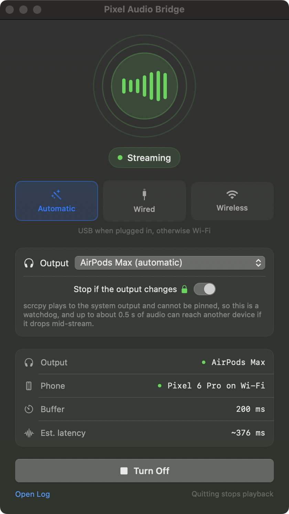

You can switch later, and doing one does not stop you doing the other.
Either route gives you the same signed and notarised app. Homebrew also installs scrcpy, which the bridge needs.
You also need adb. If you have Android Studio it is already there. If not, brew install --cask android-platform-tools.
Open Settings, then About phone. Find Build number at the bottom and tap it seven times.
It counts the last few taps down out loud, then tells you that you are now a developer. If it asks for your PIN, that is expected.
This does not change anything by itself. It only reveals a menu that was hidden.
Developer options now exists in Settings, usually under System. Open it and switch on USB debugging.
Leave it on. The bridge uses it every time it runs, so this is not a switch you flip once and turn back off.
Connect the cable. Your phone asks whether to trust this computer and shows a key fingerprint.
Tick Always allow from this computer so you are not asked again, then tap Allow.
Nothing was granted before this moment. The approval is what lets your Mac in, and it applies to that one Mac.
The computer's RSA key fingerprint is:
4A:E3:81:0C:9F:22:B7:D6
That is the phone finished with. Launch Pixel Audio Bridge, put your headphones on, and play something.
Either route gives you the same signed and notarised app. Homebrew also installs scrcpy, which the bridge needs.
You also need adb, and on this route you will type two commands with it. If you do not have Android Studio, brew install --cask android-platform-tools.
Open Settings, then About phone. Find Build number at the bottom and tap it seven times.
It counts the last few taps down, then tells you that you are now a developer. If it asks for your PIN, that is expected.
In Developer options, switch on Wireless debugging. This is a different setting from USB debugging, and on this route you do not need the USB one at all.
Your Mac and your phone have to be on the same network.
Open Wireless debugging and tap Pair device with pairing code. Your phone puts a six digit code and an address on screen.
Type both into your Mac exactly as shown. The code works once and expires when you close the dialog.
This is also the answer to sharing a network with other people. You are copying an address and a code off your own screen, so there is nothing to scan for and no list of devices to pick the right one out of.
Wi-Fi pairing code
This is the one step people get wrong. The pairing dialog and the Wireless debugging screen show different ports. Pairing is finished with, so now use the address on the Wireless debugging screen itself.
Expect connected to 192.168.1.42:41003. If it refuses, you almost certainly reused the pairing port.
Launch Pixel Audio Bridge and it will find the phone you just connected. Put your headphones on and play something.
Wireless debugging resets when the phone reboots, so you will pair again after a restart. Pairing is remembered, so it is usually only the connect step.
Closing the window does not stop playback. The app carries on from the menu bar, and quitting is what tears everything down.

Run adb devices. If it is empty, the phone has not authorised your Mac yet. Unplug and replug, and watch the phone for the prompt.
The prompt was dismissed. In Developer options, tap Revoke USB debugging authorizations, then reconnect and accept it.
Many guest and office networks isolate clients from each other, which blocks this outright. A home network or the phone's own hotspot works.
Anything else is on the troubleshooting page, and pab doctor reports every dependency, device and setting in one pass.